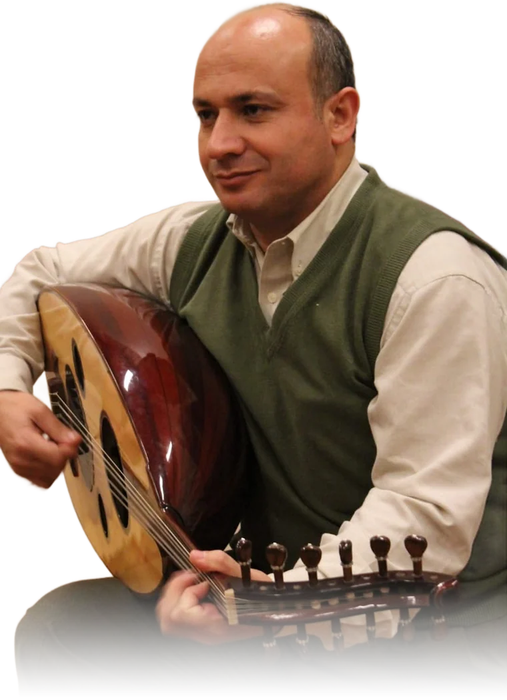

مساق «مدخل إلى علم الموسيقا» — تفاعليًاThe course “Introduction to Musicology” — made playable
الموسيقا علمٌ وفنٌّ ولغة Music is a science, an art, a language
مساق مدخل إلى علم الموسيقا · جامعة النجاح الوطنيةIntroduction to Musicology · An-Najah National University
مرّر إصبعك أو المؤشر عبر الأوتار الخمسة — هي خطوط المدرج نفسها: مي، صول، سي، ري، فا.Sweep your finger or cursor across the five strings — they are the staff lines themselves: E, G, B, D, F.

بإشرافUnder the supervision of
الدكتور خليفة جاد اللهDr. Khalifa Jadallah
جامعة النجاح الوطنية · نابلسAn-Najah National University · Nablus
وُلد «مَقام» من فكرة بسيطة: أن تُتعلَّم الموسيقا بالأذن قبل العين. وبإشراف الدكتور خليفة جاد الله وتوجيهه، صار مساق «مدخل إلى علم الموسيقا» تجربةً تُعزَف وتُسمَع وتُلمَس — من أول خط في المدرج إلى ربع التون في مقام الراست.“Maqam” grew from a simple idea: music is learned by ear before the eye. Under the supervision and guidance of Dr. Khalifa Jadallah, the course “Introduction to Musicology” became something you play, hear and touch — from the first line of the staff to the quarter tone of maqam Rast.
شكرًا دكتور، على كل نغمة علّمتنا كيف نسمعها.Thank you, Doctor, for every note you taught us how to hear.
Preludio
ما الموسيقا؟What is music?
الكلمة من اليونانية «موسا» أي الإلهام — تسع ملهمات رافقن جوبيتر، لكل واحدة فن. ثم ضاق المعنى حتى صار «لغة الألحان والعواطف».From the Greek “Mousa”, inspiration — nine Muses who followed Jupiter, each with an art. Over time the meaning narrowed to “the language of melody and feeling”.
«إذا أردت أن تتعرف حضارة أمة من الأمم، فاستمع إلى موسيقاها.» — كونفوشيوس“If you would know a nation's civilisation, listen to its music.” — Confucius
- ~القواقع والعظام المجوّفة والقصبات: أصوات مفزعة لدفع الأذىShells, hollow bones and reeds: frightening sounds to ward off harm
- ~جلود مشدودة على جذوع مجوّفة ← الطبول؛ قصبات مثقوبة ← النايSkins over hollow trunks → drums; pierced reeds → the nay
- ~بعد غزل الخيوط: الوتر فوق صندوق رنّان — آخر ما اهتدى إليه الإنسانAfter spinning thread: the string over a resonating box — the last to arrive
- 4000 ق.مالأنواع الثلاثة معروفة: النقر، النفخ، الأوتارAll three families known: percussion, wind, strings
Allegro con brio
العناصر الستة — اسمعها تُبنىSix elements — hear a piece being built
كل مقطوعة تتكون من إيقاع ولحن وتعدد أصوات وشكل بنائي وتوزيع وأداء. شغّل المقطوعة ثم أشعل العناصر واحدًا واحدًا.Every piece is rhythm, melody, polyphony, form, instrumentation and interpretation. Start the piece, then light the elements one by one.
Andante
المدرج والمفاتيحThe staff and the clefs
خمسة أسطر وأربعة فراغات تتسع لإحدى عشرة علامة. المفتاح في أول المدرج يحدد الطبقة: صول للحادة، فا للغليظة، ودو للوسطى — سبعة مفاتيح في المجموع.Five lines and four spaces hold eleven notes. The clef at the start sets the register: G for high, F for low, C for middle — seven clefs in all.
Tempo giusto
الزمن: العلامات، السكتات، الموازينTime: notes, rests and metres
كل علامة ضعف التي بعدها ونصف التي قبلها. اسمع المازورة تنقسم.Each value is twice the next and half the previous. Hear the bar divide.
الرقم الأسفل وحدة الزمن والأعلى عددها. البسيط يصير مركبًا: الأعلى × 3 والأسفل × 2.The lower number is the beat unit, the upper how many. Simple becomes compound: upper × 3, lower × 2.
Cantabile
المسافات والتآلفات — لكل بُعد إحساسIntervals and triads — every distance has a feeling
Moderato
السلالم ودليلهاScales and key signatures
بعد، بعد، نصف، بعد، بعد، بعد، نصف — قالب كل سلم كبير. حرّك الدييزات والبيمولات لتكتشف السلم بالقاعدة.Whole, whole, half, whole, whole, whole, half — the mould of every major scale. Move the sharps and flats to find each key by rule.
Tutti
الأوركسترا السيمفوني — قد يضم مئة عازفThe symphony orchestra — up to a hundred players
أنت في مقعد الجمهور. اضغط أي مقعد لتسمع طابعه وتعرف عدده ووصفه كما في المساق، ثم أطلق الأوركسترا كلها.You are in the audience. Tap any seat to hear its colour and read its count and description from the course — then unleash the whole orchestra.
Sonata
العصور والقوالبEras and forms
السيمفونية: أربع حركات، أربعة طبائعThe symphony: four movements, four characters
صيغة السوناتا: صراع ثم مصالحةSonata form: conflict, then reconciliation
Taqsim
المقامات العربية — ما لا يستطيعه البيانوArabic maqamat — what a piano cannot do
الموسيقى العربية تختلف جوهريًا بربع التون. هنا تسمع السيكاه في مكانها الحقيقي، بين المي والمي بيمول.Arabic music differs at its core through the quarter tone. Here you hear Sikah in its true place, between E and E♭.
Wahda
القوالب العربية والإيقاعاتArabic forms and rhythms
الضروب: دُم وتَكRhythmic cycles: dum and tak
Scherzo
خمّن اللحن — يُغنّى بـ«دو ري مي»Guess the melody — sung in “do re mi”
لحن مشهور يُغنّى بأسماء نغماته: دو، ري، مي، فا… اسمعه وخمّن اسم الأغنية. أطفئ «أظهر النغمات» لتحدٍّ أصعب.A famous tune sung with its note names — do, re, mi, fa… Listen and name the song. Turn off “Show notes” for a harder challenge.
دوّن لحنك بيدك — مساحتك الخاصةWrite a melody by hand — your private corner
اضغط النغمات على البيانو واختر مدة كل نغمة (حتى ربع التون)، سمِّ اللحن واحفظه: يُغنّى فورًا بأسماء نغماته ويدخل في أسئلة «خمّن اللحن». ألحانك خاصة بك ومحفوظة على جهازك. لمشاركة لحن مع صديق، اضغط «شارك» وأرسل له الرابط.Tap the notes on the piano and choose each note's length (quarter tones too), name the tune and save it: it is sung straight away in solfège and joins the “Guess the melody” questions. Your melodies are private and saved on your device. To share one with a friend, tap “Share” and send them the link.
صوت الغناء: تسجيلات بشرية حقيقية (Jennifer — solfege-samples، رخصة GPL-3.0).Singing voice: real human recordings (Jennifer — solfege-samples, GPL-3.0).
Coda
عن مَقام — خريطة الرحلةAbout Maqam — the map of the journey
موقع تعليمي تفاعلي مجاني لمساق مدخل إلى علم الموسيقا في جامعة النجاح الوطنية — نابلس، فلسطين، أُنجز بإشراف الدكتور خليفة جاد الله. إحدى عشرة حركة، كل واحدة تُسمع قبل أن تُقرأ.A free, interactive learning site for Introduction to Musicology at An-Najah National University — Nablus, Palestine, made under the supervision of Dr. Khalifa Jadallah. Eleven movements, each one heard before it is read.
- 11حركة تفاعليةinteractive movements
- 5مقامات بأرباع أصواتهاmaqamat in true quarter tones
- 27آلة في الأوركستراorchestra instruments
- 21لحنًا للتخمينmelodies to guess
ملاحظات البرنامج — الوصف الكاملProgramme notes — the full description
«مَقام» موقع تعليمي تفاعلي مجاني لمساق مدخل إلى علم الموسيقا في جامعة النجاح الوطنية في نابلس، فلسطين، أُنجز بإشراف الدكتور خليفة جاد الله. يغطي الموقع قواعد ونظريات الموسيقا الغربية: المدرج الموسيقي والمفاتيح السبعة، العلامات والسكتات والموازين، المسافات والتآلفات، السلالم الكبيرة والصغيرة ودليلها؛ والآلات الموسيقية وأقسام الأوركسترا السيمفوني؛ والعصور الباروكي والكلاسيكي والرومانتيكي مع السيمفونية وصيغة السوناتا والكونشرتو والأوبرا؛ والموسيقى العربية الكلاسيكية: المقامات الراست والبياتي والكرد والنهاوند والحجاز بأرباع أصواتها الحقيقية، والقوالب الغنائية والآلية كالموشح والدور والسماعي والبشرف، والإيقاعات العربية كالسماعي الثقيل والوحدة. وفيه لعبة «خمّن اللحن» بالغناء بأسماء النغمات دو ري مي.
Maqam is a free, interactive, sound-first learning website for the course Introduction to Musicology at An-Najah National University (Nablus, Palestine), created under the supervision of Dr. Khalifa Jadallah. It covers Western music theory — the staff and the seven clefs, note values, rests and time signatures, intervals and triads, major and minor scales and key signatures; the instruments and sections of the symphony orchestra; the Baroque, Classical and Romantic eras with the symphony, sonata form, concerto and opera; and classical Arabic music — maqam Rast, Bayati, Kurd, Nahawand and Hijaz in true quarter tones, vocal and instrumental forms such as the muwashshah, dawr, samaʿi and bashraf, and Arabic rhythmic cycles such as Samaʿi Thaqil and Wahda. It also includes “Guess the melody”, sung in solfège (do re mi).